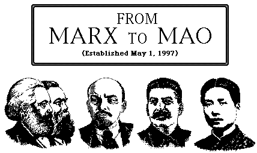

marx2mao.communist.world
This site is not affiliated with the original marx2mao.com.

Algunos Textos en Español
|
| |
|
| |
|
|
(This offers a shot-gun approach by searching the entire site. It may prove useful to those who are relatively unfamiliar with the material. However, as with any search facility, the more you can narrow the focus of your searches, the more rapidly will the search be executed, and the less likely will you be flooded with results which are only marginal to your topic of interest. Unless you are desperate, you'll be better off using the search engines specifically configured for, and available in, each of the "collections".)
Please report all "typos", non-functional links, etc., and direct all comments, suggestions, and criticisms to
generalsecretary@communist.world.